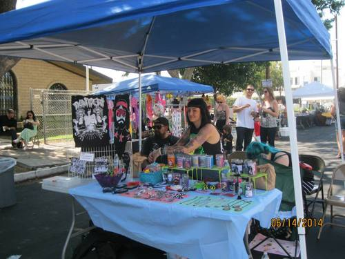
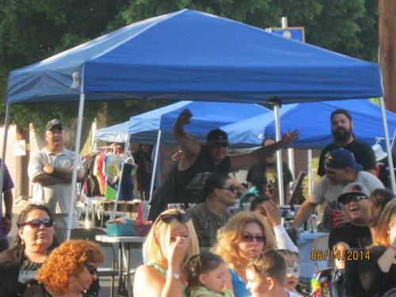
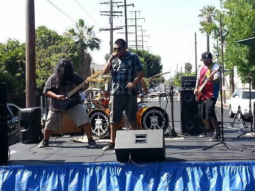

By Vera PadillaThe Lincoln Heights Chamber of Commerce Sidewalk Sale has become a tradition for many community members.
Grace Zepeda was one of hundreds who took advantage of the three day event. “I enjoy the great bargains, meeting old friends, the opportunity to meet the business owners, and lately the Saturday entertainment which is a new addition to the sale,” she said.
Gustavo Garcia, who has sold socks at the sale for over 18 years says what he likes best about the sale is it brings community members out to shop locally, and he does not have to compete with big stores. He enjoys saying thank you to his loyal customers. Community members said that they come back every time because they like supporting local businesses, searching through racks of clothing for those great bargains, and that the local stores are not like big chain stores.
While the sale requires planning for the Chamber committee and merchants, acquiring the necessary permits, and at times the ability to adapt to changing weather, rain or shine the sale goes on.
We encourage business owners to get involved in planning the next Sidewalk Sale –October 10-12th and we would like to hear your ideas, and ways to bring even more people to the event.